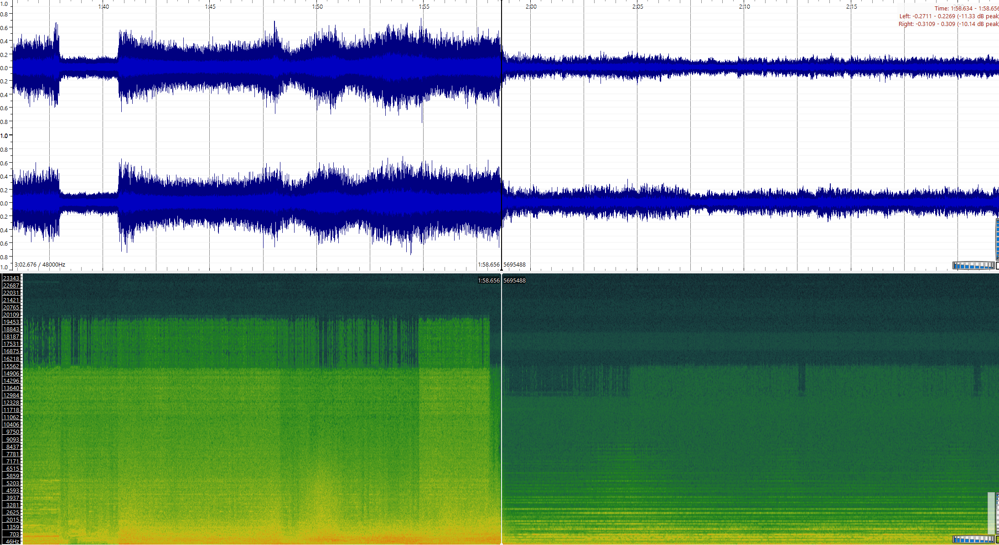
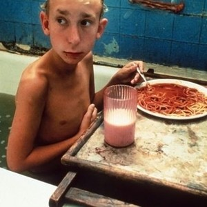
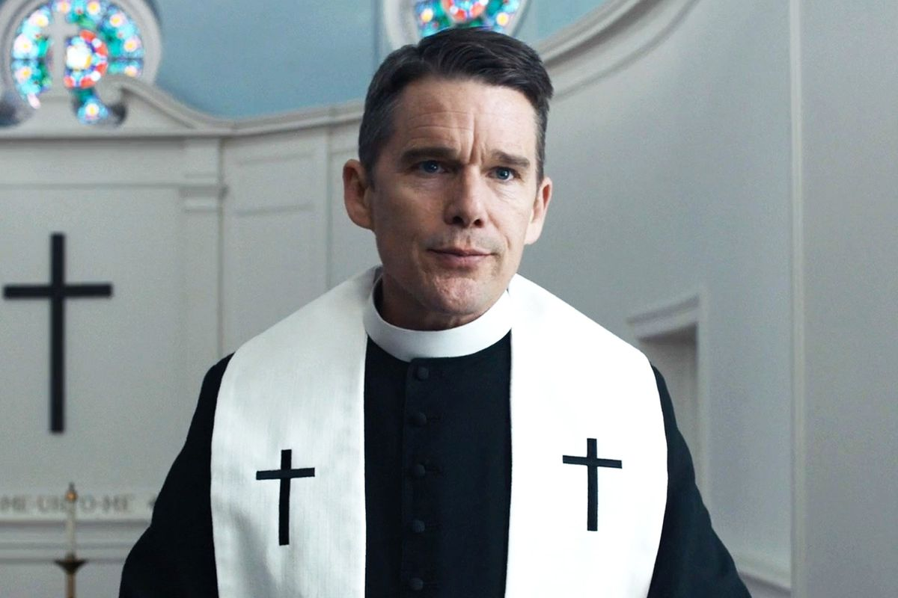
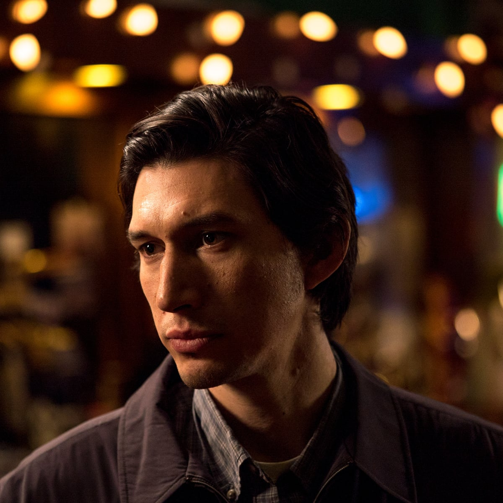

An Examination of the Final Chapter of Limbo Through the Perspectives of Fictional Characters
"If the doors of perception were cleansed, every thing would appear to man as it is: infinite." This quote from William Blake’s circa 1790 work “The Marriage of Heaven and Hell” is one that I believe best accurately represents my thoughts during my experience with Limbo, a sidescrolling indie game developed by Playdead. As I tredged along the seemingly endless predestined path, riddled with numerous puzzles of increasing difficulty, I began to cogitate on most of everything that I saw. The final scene of the game was one that I found myself thinking about over and over again, as it's ambiguity does no favors for my curious mind. The way the child's eyes flicker out when he breaks through the glass at the end, the fact that the child blinks awake just as he did at the beginning of the game, yet there was no cutaway or respawn to signify an actual death, or how the game ends when the child finally gets close to what he was looking for the entire game are all things I found my mind wandering back to. After contemplating many different theories, using the philosophy of those that I had studied prior to writing this, I went crazy with how many things in the game I could get to make sense. Like any other human being though, I decided to check and see what the fanbase of the game thinks the ending means.
After scrolling through hours of Limbo related reddit posts, clicking links to different articles related to deciphering the ending scene, I found myself seeing through the lenses of others, with many of their theories actually making sense depending on what perspective they were coming from. After this information binge I had subjected myself to, I wondered how close any of these theories were to the intentions of the developer. Then, I wonder, would learning the meaning of the developers perspective actually make any of the other theories less credible? While the developers are obviously well articulated in the world of philosophy, due to the nature of the game and the title itself, I'm certain they did not prepare for each and every second of audio to be dissected and examined through a visualizer, complimented with a deep dive into an asset the size of an insect searching for a shred of sense in the world they created. It also might be in your perspective to say that the developers did intend for us to dissect the game as much as we have. This realization of the subjectivity of truth led me to wonder what the ending of Limbo would be like from a perspective that is not my own. In this article, I will be analyzing the ending of Limbo through the personal philosophies of different fictional characters, using a third person present tense. Below are the assets I will be referencing throughout.
The ending scene to Limbo
Composed score for the ending scene
Above audio, visualized
The first character that comes to mind when thinking of this game would be Solomon from the film, Gummo, Directed by Harmony Korine.
Solomon lives in the fictional town of Xenia Ohio, which was ravaged by a tornado killing many of the people living in it. Solomon is a little boy, like our protagonist in Limbo, who witnessed the brutal destruction of his hometown. He continues to live there afterwards, killing stray cats to the local grocer for milkshake money. Throughout the film, which features many disgusting settings, Solomon is constantly able to find humor and beauty in many things that aren't so. "My neighbor was killed in that house. He used to ride bikes and three-wheelers. They never found his head. I always thought that was funny. Lots of people died to the great tornado." Solomon thinks about this quote as he explores the dreary and ominous world of Limbo. The scoring in limbo isn't particularly melodic, with many moments of the music being composed of noises from moving machinery. This machinery has patterns through its clanging and clacking though, leading Solomon's brain to follow along as if it were a hardcore heavy metal track. Particularly through the song above, for most of the machanical first half Solomon can hear a repeated clash as if someone were banging hard on some cymbals, but the pattern never falters and continues to stay on beat. Heavy metal for instance, which makes up most of the gummo soundtrack, isn't a genre that most people would use the term beautiful to describe, but a rocking riff or baseline makes Solomon feel as good as listening to a beautifully played sonata on the piano. The track goes from extremely loud, rythmic clanging to soft, heavenly chords in the blink of an eye. The transition from something so jarringly intense to something so melodic is extremely satisfying to Solomon. This happens as soon as he approaches the part where the character has to jump, and is ricocheted back into the glass. Solomon thinks to himself about how it represents the beauty of life and its many different situations, how easily the world can flip from one truth to another.
Solomon finds it particularly funny that the boy almost falls to his death, but narrowly avoids it by a seemingly divine intervetion. "Life is beautiful. Really, it is. Full of beauty and illusions. Life is great. Without it, you'd be dead." Solomon thinks about this quote as the boy falls, and is pulled back up to be thrown through the glass. There are some things in life that you just cant explain, and life is full of them. All that you can do is sit back and enjoy it. Both Solomon and the boy have no reaction to the brutal things around them other than the sense of childlike innocence. The boy in limbo shows no emotion, he just continues to move onward. They have no representation for the value of an actual life, just that sometimes things happen, and you have to keep going forward no matter what, because if not you would simply stop. Using this quote, Solomon observes that maybe the boy did die while breaking through the barrier; but the constant will to keep going because of the call to preserve the beauty of life was enough to bring the light back into his eyes.The world is bigger than your imagination, and everytime you see something new is a confirmation that there is something more to see. The sense of discovery is something that everyone, especially Solomon, is familiar with. As Solomon reaches the end, when the boy approaches his sister, there is a ladder on the top right signifying that this is not the end of the journey. This is just one of those wonderful things that life gives you, so that you may continue until one day the path stops. The girl's eyes aren't glowing as his are though, so this may signify that the girl is older, or has lost the sense of imagination and discovery. Just as kids are dependent on companionship, maybe his sister is lost and alone, and was waiting for her reminder that life is beautiful. Solomon may never know, as the scene cuts away as soon as the girl realizes the boy is there. After reflecting for a moment, Solomon compares Limbo to a going for a walk. The world is a big intimidating place, but if you don't keep going forward you won't make it home in time for supper.
The second character I think of when it comes to a strong personal philosophy is Rev. Ernst Toller from First Reformed, directed by Paul Schrader.
Rev. Ernst Toller is a preacher in a small town in upstate New York, who was approached by an environmental activist questioning what God has called for us to do in times when humans are destroying his creation. What follows is an examination on personal responsibility and courage, told through the eyes of a deeply spiritual individual. "Courage is the solution to despair, reason provides no answers. I can't know what the future will bring; we have to choose despite uncertainty. Wisdom is holding two contradictory truths in our mind, simultaneously, Hope and despair. A life without despair is a life without hope. Holding these two ideas in our head is life itself." This quote from Rev. Toller himself on the idea of what life itself is seems to resonate with him, especially during the last moments of the game. Rev. Toller plays until his character finally gets to the end of the road. All there is left to do by the end is to seemingly jump to your death. Rev. Toller thinks about how during the entirety of the game, everything around him has been in despair. People locked inside of cages, being hung, hunted by creatures, there is no lack of tragedy in this world. The solution to this despair is to have the courage to continue onward, to answer the call and step forward in the face of uncertainty. Rev. Toller says that the glowing eyes on our character represents being enlightened, on a mission to answer the call of God himself. "Some are called for their gregariousness, some are called for their suffering. Others are called for their loneliness." Rev. Toller thinks that the plunge into darkness at the end of the game represents having complete faith in the ideals of hope and dispair, having courage to trust the way forward and accept that there is no way to reason around it. When the boy is pulled back from his plunge, shattering through the barrier and losing the light in his eyes, Rev. Toller thinks that this could represent losing yourself in the search for meaning, in turn losing your faith to answer God's call as well. For awhile the boy lays motionless, waiting for the spark of courage to reignite the light in his eyes. He then get back up, and resumes the quest.
Through the entirety of the game though, Rev. Toller is fairly uncertain on what this quest actually is. After reawakening, or reenlightenment, he finds his character stepping up towards a figure that is sitting on their knees on top of a hill. Their eyes are dark though, not lit like the boy. "Every act of preservation is an act of creation. Everything preserved renews creation. It's how we participate in creation." This quote from Rev. Toller lingers with him as he recalls what the call from God is, which is to participate in creation by preservation. In relation to Limbo, could this mean the preservation of the courage to face despair? He knows that his protagonist is the only creature with glowing eyes, moving forever onward towards a goal that we have no real confirmation of. Rev. Toller notices there is a ladder leading up to somewhere at the end scene. Is the call asking them both to move onward? In these moments, he says that the call was to spread the power of enlightenment to as many creatures living in this dying world, so that they can continue to answer the call of God to preserve what little bit of humanity is left. This would mean that the boy could inspire the girl, causing them both to go forward and be the change that continues creation. Toller points out that humanity is constantly surrounded by terrible things, with youth being exposed to an incredible amount of things that they shouldn't be, in turn halting the preservation of righteousness in society. This can be compared to how the child in Limbo witnesses many terrible things and is seemingly desensitized to all the things around him. Rev. Toller's believes that Limbo is a game based on the functionality and preservation of courage in the face of despair.
The last character I think of when it comes to different interpretations of things is Paterson, from the film Paterson, directed by Jim Jarmusch.
Paterson is a bus driver and poet from Paterson, New Jersey. He spends his days enjoying the little things, and walking his english bulldog. "When you’re a child, you learn there are three dimensions: height, width, and depth. Like a shoebox. Then later, you hear there’s a fourth dimension: time. Then some say there can be five, six, seven. I knock off work, have a beer at the bar. I look down at the glass and feel glad." As Paterson gets to the end of where the boy is about to jump, he wonders if the boy knows what is happening. The boy isn't particularly emotional about the fate that has been presented to him, all he knows is that there are no other places for him to go. The boy sees the area in front of him where he is supposed to be and waits for Paterson to push him forward. The odd thing about the fate of the boy is the fact that there is nothing forcing him into the pit in front of him. There is no dangerous creature pushing the boy into the pit, or anyone verbally telling him to jump. When Paterson thinks about death, he thinks about how there isn't a lot of time in between someone knowing they are about to die, and the event itself. Some people are never concious of their death up until the very last second. The idea that this boy has all the time in the world before his death is interesting to Paterson. Could the boy stay in this timeless area forever, or will he face the fourth dimension and let time resume how it was meant to be? After taking the time to appreciate the artwork for one last time, Paterson urges his character off the edge.
"Without love, what reason is there for anything?" This is the quote Paterson thinks about as he watches the boy be saved and thrown through the glass. If what Paterson has seen throughout the game is all there is to Limbo, what would be the point of playing the game? Paterson watches as the life comes back to the boys life and the computer takes over the boys movements. There are things that can only happen when the world allows it to, and everything in between is time spent waiting. Time is a silly thing that happens at the most perfect or inconvenient moments. Paterson watches the boy climb up the hill and see the girl. When the boy stops, that's when the reason for anything is revealed. The reason the boy was tredging along forever, the reason he fell into the pit emotionless was because he was looking for something that he loved, that did make him feel something. The last moments of the game are when we see the boy be the most emotional he has been just through body language alone. When the screen cuts away before the moment of contact, Paterson believes that is when time in Limbo stops. Paterson believes the game is a representation of time in between the moments that make you feel, a game where each dimension exists and can be affected.
The interesting part about comparing these different intepretations of the ending are that they are equally understandable as they are different. Rev. Toller would argue that the game would represent the call to action of preserving courage, or hopefullness in a dreary landscape. Solomon would argue that the game represents the sense of discovery, finding the beauty in the darkest and dangerous places. Paterson would argue that the game represents passages of time in between the moments that make life worth living. All of them use the argument of the childs eyes, the plunge into uncertainty, the regaining of light, and what could happen after the scene cuts away to defend their perspective on what they beleive the game means. There are things that are known, and there are things that are intepreted, and both of these examples use things that are known to intepret the unknown. The beauty of perspective in this case, is the validity of multiple varying theories. .
INSTRUCTIONS:
W/S – move left paddle up/down
cursor up/down – move right paddle up/down
R - reset
1 – cycle right paddle computer control
2 – toggle left paddle mouse control
M – toggle mute sound
N/B – volume up/down (0–10)